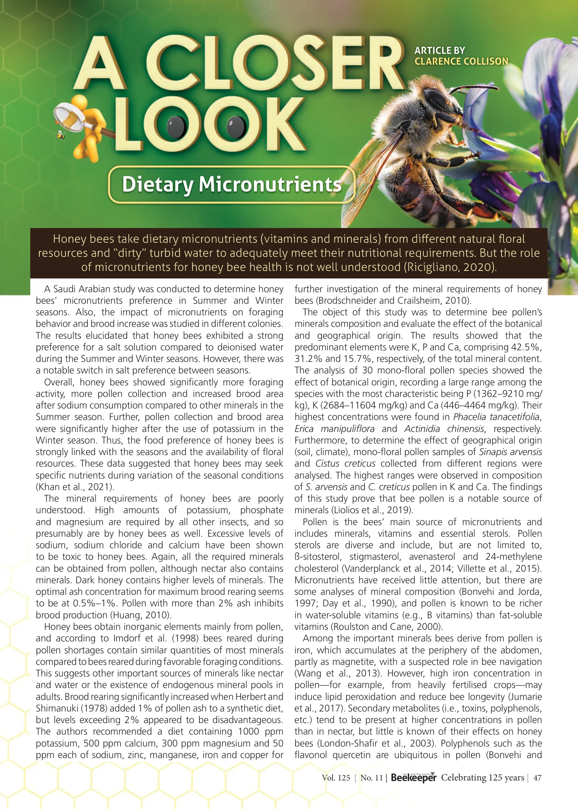

ARTICLE BY
CLARENCE COLLISON
Dietary Micronutrients
Mike Perry
A Saudi Arabian study was conducted to determine honey
bees’ micronutrients preference in Summer and Winter
seasons. Also, the impact of micronutrients on foraging
behavior and brood increase was studied in different colonies.
The results elucidated that honey bees exhibited a strong
preference for a salt solution compared to deionised water
during the Summer and Winter seasons. However, there was
a notable switch in salt preference between seasons.
Overall, honey bees showed significantly more foraging
activity, more pollen collection and increased brood area
after sodium consumption compared to other minerals in the
Summer season. Further, pollen collection and brood area
were significantly higher after the use of potassium in the
Winter season. Thus, the food preference of honey bees is
strongly linked with the seasons and the availability of floral
resources. These data suggested that honey bees may seek
specific nutrients during variation of the seasonal conditions
(Khan et al., 2021).
The mineral requirements of honey bees are poorly
understood. High amounts of potassium, phosphate
and magnesium are required by all other insects, and so
presumably are by honey bees as well. Excessive levels of
sodium, sodium chloride and calcium have been shown
to be toxic to honey bees. Again, all the required minerals
can be obtained from pollen, although nectar also contains
minerals. Dark honey contains higher levels of minerals. The
optimal ash concentration for maximum brood rearing seems
to be at 0.5%–1%. Pollen with more than 2% ash inhibits
brood production (Huang, 2010).
Honey bees obtain inorganic elements mainly from pollen,
and according to Imdorf et al. (1998) bees reared during
pollen shortages contain similar quantities of most minerals
compared to bees reared during favorable foraging conditions.
This suggests other important sources of minerals like nectar
and water or the existence of endogenous mineral pools in
adults. Brood rearing significantly increased when Herbert and
Shimanuki (1978) added 1% of pollen ash to a synthetic diet,
but levels exceeding 2% appeared to be disadvantageous.
The authors recommended a diet containing 1000 ppm
potassium, 500 ppm calcium, 300 ppm magnesium and 50
ppm each of sodium, zinc, manganese, iron and copper for
further investigation of the mineral requirements of honey
bees (Brodschneider and Crailsheim, 2010).
The object of this study was to determine bee pollen’s
minerals composition and evaluate the effect of the botanical
and geographical origin. The results showed that the
predominant elements were K, P and Ca, comprising 42.5%,
31.2% and 15.7%, respectively, of the total mineral content.
The analysis of 30 mono-floral pollen species showed the
effect of botanical origin, recording a large range among the
species with the most characteristic being P (1362–9210 mg/
kg), K (2684–11604 mg/kg) and Ca (446–4464 mg/kg). Their
highest concentrations were found in Phacelia tanacetifolia,
Erica manipuliflora and Actinidia chinensis, respectively.
Furthermore, to determine the effect of geographical origin
(soil, climate), mono-floral pollen samples of Sinapis arvensis
and Cistus creticus collected from different regions were
analysed. The highest ranges were observed in composition
of S. arvensis and C. creticus pollen in K and Ca. The findings
of this study prove that bee pollen is a notable source of
minerals (Liolios et al., 2019).
Pollen is the bees’ main source of micronutrients and
includes minerals, vitamins and essential sterols. Pollen
sterols are diverse and include, but are not limited to,
ß-sitosterol, stigmasterol, avenasterol and 24-methylene
cholesterol (Vanderplanck et al., 2014; Villette et al., 2015).
Micronutrients have received little attention, but there are
some analyses of mineral composition (Bonvehi and Jorda,
1997; Day et al., 1990), and pollen is known to be richer
in water-soluble vitamins (e.g., B vitamins) than fat-soluble
vitamins (Roulston and Cane, 2000).
Among the important minerals bees derive from pollen is
iron, which accumulates at the periphery of the abdomen,
partly as magnetite, with a suspected role in bee navigation
(Wang et al., 2013). However, high iron concentration in
pollen—for example, from heavily fertilised crops—may
induce lipid peroxidation and reduce bee longevity (Jumarie
et al., 2017). Secondary metabolites (i.e., toxins, polyphenols,
etc.) tend to be present at higher concentrations in pollen
than in nectar, but little is known of their effects on honey
bees (London-Shafir et al., 2003). Polyphenols such as the
flavonol quercetin are ubiquitous in pollen (Bonvehi and
Honey bees take dietary micronutrients (vitamins and minerals) from different natural floral
resources and “dirty” turbid water to adequately meet their nutritional requirements. But the role
of micronutrients for honey bee health is not well understood (Ricigliano, 2020).
Vol. 125 | No. 11 |
Celebrating 125 years | 47